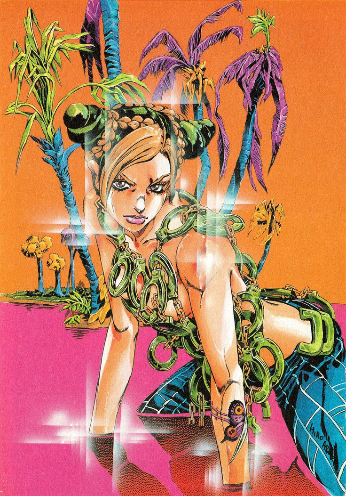
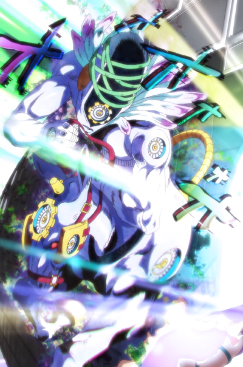

Stone Ocean is the sixth part of JoJo's Bizarre Adventure. It was serialized in Weekly Shonen Jump from 1999 to 2003 and adapted into a 2021 to 2022 TV series by David Productions. This part follows the adventures of Jolyne Kujo, daughter of Jotaro Kujo, who is accused of a crime she didn't commit and ends up on a maximum security prison. The main conflict of the part stems from the plan Enrico Pucci and now deseaced antagonist Dio have put into motion many years before. Inside the prison she awakens her stand "Stone Ocean" and is visited by her astranged father Jotaro who came to protect her from a prisioner disciple of Dio.
Unkowngly Jotaro becomes Pucci's target and loses his powers forcing Jolyne and a group of prisioners to chase after him to recover her father. As they chase him Pucci's scheme comes to fruition giving birth to the Green Baby born of Dio's bone and the souls of prisioners.Pucci absorves the Green Babby and obtains the Stand "C-MOON" that controlls gravity. With the power of gravity all events come towards Pucci leading him to achieve Heaven before the now restored Jotaro and gang manage to stop him.
Now with the power of "Maid in Heaven" Pucci undoes the universe forcing the timelines to shatter creating the later parts of JoJo's. Pucci is at the end undone by the power of "Maid in Heaven" by Emporio who's mother he killed. At the end of the part Emporio finds the new version of Jolyne , now called Irine who he befriends.
The story begins with Jolyne being convicted of a murder she didn't convict by a clearly corrupt judge. Durring her transfer to prison she befriends Emres Costello , a fellow inmate , who she help with her stand "Stone Free" by returning her money. Inside the prisson Jolyne fully awakens her stand and is promptly visited by her astranged father who expresses remorse about how he has treated her,but their reunion is cut by the attack of 2 stand users that results in Enrico Pucci stealing Jotaro's memories and Stand by putting them in dis using his stand "White Snake". After these events Jolyne fully resolves herself to retrieve her father's disc and heal him from his comma alongside the help of Ermes,Emporio,Anasui and Weather report.
Jolyne makes a call to the Speedwagon foundation to deliver the disc containing Star Platinum after retriving it from Foo Fighters(F.F) who she has befriended. Pucci attempts to jepardise their mission but by using Weather Report's stand the disc is able to be delivered to Jotaro.Ermes takes her revenge on her sister's killer and this results in Jolyne being trapped in the punishment ward due to all the trouble she has caused.There she faces against 4 stand users sent by Pucci to assassinate her.After defeating the enemies Jolyne realises the burden her father had by trying to protect her and her mother by staying away from their battles. Jolyne then searches for the guard with Dio's bone but is too late as every corpse blooms alongside the guard and transforms into a green embrio.
Choosing to escape the prision ward Jolyne and Anasui take a motorboat to cross a swamp next to the punishment ward. There they defeat another Stand user while F.F fights Pucci stalling for Jolyne and the rest. However the embrio fully hatches as the Green Baby and Pucci ambushes the group ,wounding Anasui and using Jotaro's memory disc to distract Jolyne. Pucci fuses with the Green Baby and obtains a new stand the Joestar birth mark and beggins to gravitate Fate towwards him. Nearing death F.F use the last of their power to heal Anasui dying in the procces leaving Jolyne with a last goodbye.
Now transformed into a walking center of Gravity Pucci leaves the prison and heads to the coordinates that will allow him to complete his plan.Meanwhile the gang look for a way to escape the prision.As they are escaping,Pucci finds Dio's three sons that wound up in America and makes them stand users.After escaping Anasui and Weather report defeat one of Dio's son while another was delt by Anasui and Emporio with the last being defeated by Jolyne. As he is being defeated Donatello expresses his resentment of the world and commands his stand to return Weather Report's missing memmory disc.
Weather Report gets his memmories back and a flashback explains the tragic past of Pucci and Weather Report,two brothers seperated on birth.Choosing to kill Pucci right then and there Weather hunts him down and faces off with him. Jolyne comes to separate the two brothers nearly hitting them both with a car but is too late as Weather has been killed by Pucci,however his stand disc is found by Jolyne who gives it to Emporio. Pucci escapes the group and goes towards Cape Carnaveral to complete his plan.
As Pucci nears Cape Carnaveral he trully awakens his power over gravity evolving his stand to "C-MOON" and uses it and it's power to controll gravity to slow down his pursuers.Finally arriving on Capre Carnaveral he fights everyone including a now revitalized Jotaro who has obtained both his stand and memories. However it is too late as his and Dio's plan comes to completion and Pucci ascends and evolves his stand once more to "Made in Heaven". Overwelmed by the power of his new stand allowing him to accelerate time using gravity for himself and any non living thing Pucci kills everyone in front of a hopeless Emporio who bears withness to the eventuall reset of the universe by Pucci's power.
Now all alone Emporio is trailled by Pucci that explains to him that the singularity point has been ecceded and he has created a universe that allows all living beings to subconciously know their future thus accepting peacefully their fate. Planning to kill him to end this chapter of his life Pucci is tricked by Emporio who has tranfered Weather Report's disc onto himself allowing Pucci's accelerating time to kill him by Oxygen poisoning. With Pucci now dead the universe reaches another Singularity point and the timeline is yet again reset. All alone now Emporio cries as a reincarnated Jolyne now named Irene brings him alongside a reincarnated Anasui now known as Anakiss as they drive of to meet Irene's father.


Comments